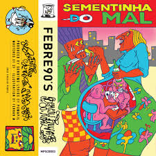
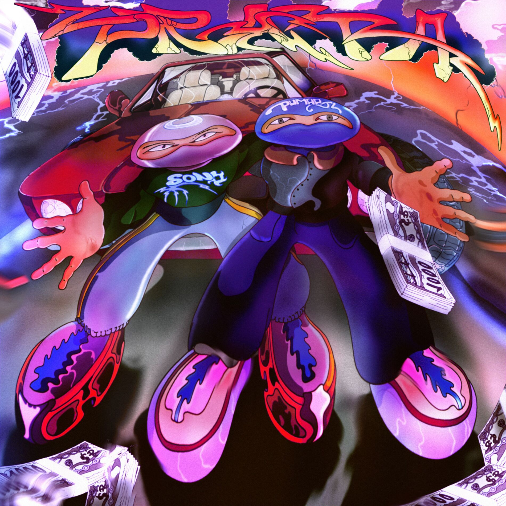

Pumapjl
Rapper e Compositor
Popular
Cartier Santos Dumont

Sementinha do Mal

Cheiro do Verde
No Piscar dos Olhos

Prata
Você Está Com Febre?
Discografia
Autodomínio
Album · 2023
Naturalidade
EP · 2020
Sobre
Pumapjl, nascido e criado no subúrbio do Rio de Janeiro, começou os experimentos musicais retratando seu cotidiano aos 17 anos de idade. Com a infância e adolescência turbulenta, repleta de aventuras, ele encontrou na música o prazer de registrar a beleza e o caos que moram nas situações do dia a dia de um carioca.